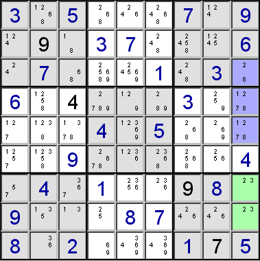

This technique is known as "naked pair" if two candidates are involved, "naked triplet" if three, or "naked quad" if four.
If two cells in the same row, column or block have only the same two candidates, then those candidates can be removed from the candidates of the other cells in that row, column or block. This is because one of the cells must hold one of the candidates, and the other cell must hold the other candidate - so neither can go in any of the other cells.
This technique can be applied to more than two cells at once, but in all cases, the number of cells must be the same as the number of different candidates. Each cell doesn't need to have every member of the subset as candidates, but no cell can have any candidates outside the subset.For example, consider a row that has the candidates:
{1, 7}, {6, 7, 9}, {1, 6, 7, 9}, {1, 7}, {1, 4, 7, 6}, {2, 3, 6, 7}, {3, 4, 6, 8, 9}, {2, 3, 4, 6, 8}, {5}
(The single {5} indicates that this cell already holds the value 5.) You can see that there are two cells that only have the same two candidates 1 and 7. One of these cells must hold the 1, and the other cell must hold the 7, although we don't know which is which. So 1 and 7 can be removed from the candidates for the other cells. This reduces the candidates to:
{1, 7}, {6, 9}, {6, 9}, {1, 7}, {4, 6}, {2, 3, 6}, {3, 4, 6, 8, 9}, {2, 3, 4, 6, 8}, {5}
So now there are two cells that have 6 and 9 as the only candidates. Repeating the process for these numbers leaves:
{1, 7}, {6, 9}, {6, 9}, {1, 7}, {4}, {2, 3}, {3, 4, 8}, {2, 3, 4, 8}, {5}
Now we have a cell with a single candidate - i.e. we have reduced the candidates to the extent that we have determined the only value that can possibly go into this cell.
In the puzzle below, the green cells contain the naked pair 2 and 3, allowing 2 and 3 to be eliminated from the candidates for the other cells in column nine.
